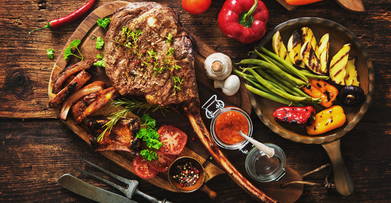

FitX
Indian Diet Plan for Keto

"Keto is more than a Diet. It is a Lifestyle."
7-Day Indian Diet Plan For Keto
Today everyone wants to be fit and has become extremely health conscious when it comes to decisions they make with food. Eating correctly is the most important step when it comes to losing weight. Everyone wishes for fast results and thus try out the weirdest hacks. One such diet is the Keto diet plan, that aims to cut out carbs from the dieter’s meal plan, and it has proven to be beneficial to many.
Low carb diets like the keto diet meal plan are gaining all the traction as it has promised rapid weight loss without making one feel starved and deprived of food; it is almost like having the best of both worlds. However when it comes to Indian food, there is a general assumption about food being too rich, spicy, oily and filled flavor; basically one would not look at Indian meals and call them appropriate diet foods. While our herbs and spices that make food so satisfying are usually keto friendly.
Let us check out what a healthy 7-day Indian diet plan for keto includes.
Healthy Indian Diet Chart for Keto :
Day 1:
*Breakfast
-1 Omelette Cooked in Butter with Bacon, Bulletproof Coffee
*Lunch
-1 Mutton Seekh Kebab
*Dinner
-1 Omelette
Day 2:
*Breakfast
-1 Hard-Boiled Eggs with Mutton Seekh Kebab, Mint Chutney
*Lunch
-1 Shallow Fried Cottage Cheese
*Dinner
-1 Shredded Chicken Breast in Soya Sauce
Day 3:
*Breakfast
-1 Masala Omelette with Cheese with Smoked Bacon
*Lunch
-1 Parboiled Cauliflower in Mayo with Mutton Seekh kebab
*Dinner
-1 Keto Butter Chicken/Murg Makhani
Day 4:
*Breakfast
-1 Scrambled Eggs with Chicken Sausages
*Lunch
-1 Chicken Malai Tikka
*Dinner
-1 Chicken Seekh Kebab
Day 5:
*Breakfast
-1 Protein shake
*Lunch
-1 Shami Kebab with Greek Yogurt and Sliced Strawberries
*Dinner
-1 Chicken Broth, Hard Boiled eggs, Honey Smoked Bacon
Day 6:
*Breakfast
-1 Scrambled Eggs with Bulletproof Coffee
*Lunch
-1 Capsicum/Peppers stuffed with Cottage Cheese (Paneer)
*Dinner
-1 Keto Tandoori Chicken
Day 7:
*Breakfast
-1 Keto Cheese Rollups
*Lunch
-1 Keto Quesadillas
*Dinner
-1 Yummie Spinach Pie